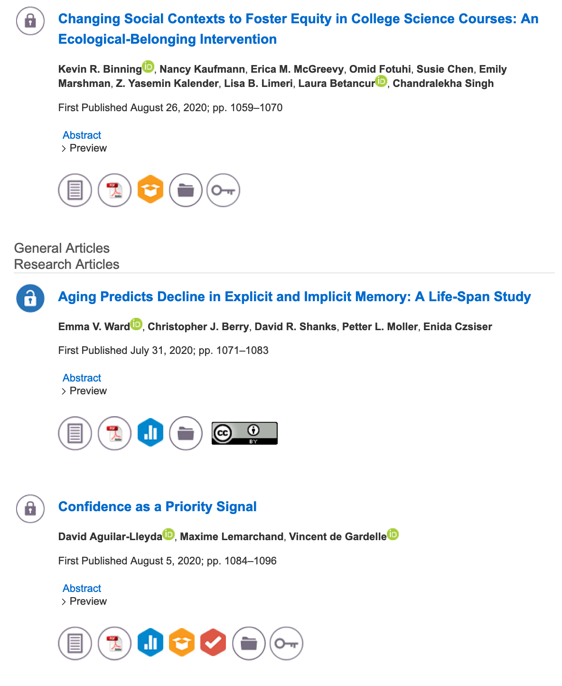
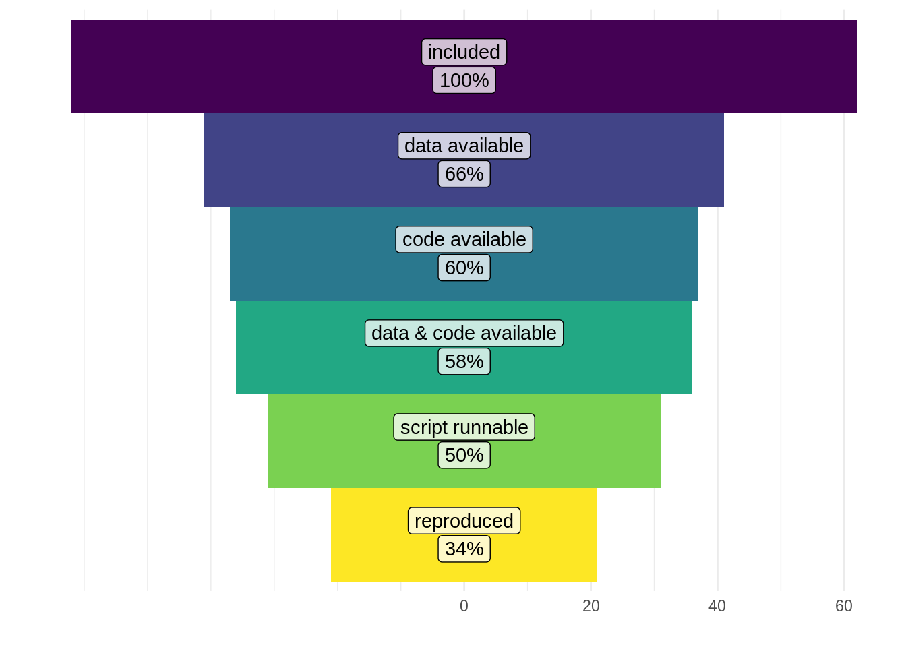

Chapter 15 Reproducibility, Replicability, and Robustness
Some data management disasters
- (The Economist 2011); (“Video: Keith Baggerly, "When Is Reproducibility an Ethical Issue? Genomics, Personalized Medicine, and Human Error"” n.d.)
- Herndon, Ash, and Pollin (2014); but you can just read Bailey and Borwein (Jon) (n.d.), Cassidy (n.d.), watch (Reinhart & Rogoff - Growth in a Time of Debt - EXERCISE! 2019)
- Laskowski (n.d.), Viglione (2020), Pennisi (2020)
- (“How Excel May Have Caused Loss of 16,000 Covid Tests in England” n.d.)
15.1 The Replication Crisis
An epistemic-methodological crisis unfolding across multiple scientific fields, especially biomedicine and social psychology
Usually defined in a phrase: “studies replicate much less often than you would expect”
Received the most attention in the wake of a high-profile effort to replicate a collection of high-profile psychology studies (Open Science Collaboration 2015)
In psychology

Figure 15.1: As part of the open science movement, some journals have added badges to journal articles indicating open data, open code, etc.
- Beyond academia
15.2 Terminology
A 2019 National Academy of Sciences (NAS) report noted that people often use the terms “reproduce” and “replicate” interchangeably, and consequently conflate two very different expectations for quantitative experimental research (National Academies of Sciences, Engineering, and Medicine 2019)
Hicks (2020b) reviews the NAS definitions and also compares them to “robustness”
- Replicability: Run the experimental again, getting new data on a more-or-less similar sample. Do the same analysis. Do we get qualitatively similar results?
- Reproducibility: Run the same analysis script on the same data on a different computer. Do we get numerically identical results?
- Robustness: Use a different analytical approach to attempt to answer the same research question on the same data. Do we get qualitatively similar results? (Steegen et al. 2016; Silberzahn et al. 2018)
- Replicability: Run the experimental again, getting new data on a more-or-less similar sample. Do the same analysis. Do we get qualitatively similar results?
| same data? | same analysis? | expect to get | |
|---|---|---|---|
| replicability | Y | similar results | |
| reproducibility | Y | Y | numerically identical results |
| robustness | Y | similar results |
- “Qualitatively similar” is necessarily vague and requires interpretation
- Researchers can and do disagree about whether any particular set of results is sufficiently “similar” or “different” (Feest 2016)
- Sometimes a quantitative standard is used: “replication attempt is also statistically significant and effect is in the same direction”
- But the unavoidable chance of type I and II errors means there’s still uncertainty
- And remember that the threshold of statistical significance is basically arbitrary
- “Numerically identical” is not vague
- (At least, up to a tolerance threshold, and with the proviso that the computers are working correctly)
- Problem-solution mismatch
15.3 Epistemic Value of Reproducibility
Reproducibility is a necessary condition for computational research, but has low evidentiary value.
Necessary condition: If we can’t run your code on your data and get the same output, something has gone seriously wrong.
Low evidentiary value: Reproducibility tells us only that your code reliably produces the output you reported.
| Whether your research question is reasonable |
| Whether your data was collected the way you think it was |
| Whether your data can possibly answer your research question |
| Whether your data was fabricated |
| Whether your data was mismanaged |
| Whether your analyses are appropriate |
| Whether your analysis includes relevant covariates |
| Whether your code runs the analysis that you think it does |
| Whether you p-hacked your analysis (Simmons, Nelson, and Simonsohn 2011) |
| How to interpret your analysis output |
| How to characterize your intervention and endpoint (Feest 2019) |
15.4 Open Science ≠ Reproducible
- Obels et al. (2020)
- Reproducibility check of 62 pre-registered studies in a Center for Open Science database
- “Of the 62 articles that met our inclusion criteria, 41 had data available, and 37 had analysis scripts available”
- “We could run the scripts for 31 analyses, and we reproduced the main results for 21 articles.”

Figure 15.2: Infographic for Obels et al. (2020). While 58% of preregistered studies provided both the data and analysis script, only 50% had runnable scripts and only 34% could actually be reproduced.
References
Aschwanden, Christie. 2017. “There’s No Such Thing as ‘Sound Science’.” FiveThirtyEight. December 6, 2017. https://fivethirtyeight.com/features/the-easiest-way-to-dismiss-good-science-demand-sound-science/.
Bailey, David H., and Jonathan Borwein (Jon). n.d. “The Reinhart-Rogoff Error – or How Not to Excel at Economics.” The Conversation. Accessed May 16, 2020. http://theconversation.com/the-reinhart-rogoff-error-or-how-not-to-excel-at-economics-13646.
Cassidy, John. n.d. “The Reinhart and Rogoff Controversy: A Summing Up.” The New Yorker. Accessed September 27, 2020. https://www.newyorker.com/news/john-cassidy/the-reinhart-and-rogoff-controversy-a-summing-up.
Feest, Uljana. 2016. “The Experimenters’ Regress Reconsidered: Replication, Tacit Knowledge, and the Dynamics of Knowledge Generation.” Studies in History and Philosophy of Science Part A 58 (August): 34–45. https://doi.org/10.1016/j.shpsa.2016.04.003.
Feest, Uljana. 2019. “Why Replication Is Overrated.” Philosophy of Science 86 (5): 895–905. https://doi.org/10.1086/705451.
Herndon, Thomas, Michael Ash, and Robert Pollin. 2014. “Does High Public Debt Consistently Stifle Economic Growth? A Critique of Reinhart and Rogoff.” Cambridge Journal of Economics 38 (2): 257–79. https://doi.org/10.1093/cje/bet075.
Hicks, Daniel J. 2020b. “Comment Submitted by Daniel J. Hicks, Department of Cognitive and Information Sciences, University of California, Merced.” Regulations.gov. May 20, 2020. https://www.regulations.gov/document?D=EPA-HQ-OA-2018-0259-11405.
“How Excel May Have Caused Loss of 16,000 Covid Tests in England.” n.d. The Guardian. Accessed October 5, 2020. http://www.theguardian.com/politics/2020/oct/05/how-excel-may-have-caused-loss-of-16000-covid-tests-in-england.
Ioannidis, John P. A. 2005. “Why Most Published Research Findings Are False.” PLoS Med 2 (8): e124. https://doi.org/10.1371/journal.pmed.0020124.
Laskowski, Kate. n.d. “What to Do When You Don’t Trust Your Data Anymore – Laskowski Lab at UC Davis.” Accessed January 29, 2020. https://laskowskilab.faculty.ucdavis.edu/2020/01/29/retractions/.
Leonelli, Sabina. 2018. “Rethinking Reproducibility as a Criterion for Research Quality.” In Research in the History of Economic Thought and Methodology, edited by Luca Fiorito, Scott Scheall, and Carlos Eduardo Suprinyak, 36:129–46. Emerald Publishing Limited. https://doi.org/10.1108/S0743-41542018000036B009.
Meehl, Paul E. 1967. “Theory-Testing in Psychology and Physics: A Methodological Paradox.” Philosophy of Science 34 (2): 103–15. http://www.jstor.org.proxy1.lib.uwo.ca/stable/186099.
Munafò, Marcus R., Brian A. Nosek, Dorothy V. M. Bishop, Katherine S. Button, Christopher D. Chambers, Nathalie Percie du Sert, Uri Simonsohn, Eric-Jan Wagenmakers, Jennifer J. Ware, and John P. A. Ioannidis. 2017. “A Manifesto for Reproducible Science.” Nature Human Behaviour 1 (1, 1): 1–9. https://doi.org/10.1038/s41562-016-0021.
National Academies of Sciences, Engineering, and Medicine. 2019. Reproducibility and Replicability in Science. Washington, D.C.: National Academies Press. https://doi.org/10.17226/25303.
Nosek, B. A., G. Alter, G. C. Banks, D. Borsboom, S. D. Bowman, S. J. Breckler, S. Buck, et al. 2015. “Promoting an Open Research Culture.” Science 348 (6242): 1422–5. https://doi.org/10.1126/science.aab2374.
Obels, Pepijn, Daniël Lakens, Nicholas A. Coles, Jaroslav Gottfried, and Seth A. Green. 2020. “Analysis of Open Data and Computational Reproducibility in Registered Reports in Psychology.” Advances in Methods and Practices in Psychological Science 3 (2): 229–37. https://doi.org/10.1177/2515245920918872.
Open Science Collaboration. 2015. “Estimating the Reproducibility of Psychological Science.” Science 349 (6251): aac4716–aac4716. https://doi.org/10.1126/science.aac4716.
Pennisi, Elizabeth. 2020. “Prominent Spider Biologist Spun a Web of Questionable Data.” Science 367 (6478): 613–14. https://doi.org/10.1126/science.367.6478.613.
Reinhart & Rogoff - Growth in a Time of Debt - EXERCISE! 2019. https://www.youtube.com/watch?v=ItGMz0ERvcw.
Silberzahn, R., E. L. Uhlmann, D. P. Martin, P. Anselmi, F. Aust, E. Awtrey, Š. Bahník, et al. 2018. “Many Analysts, One Data Set: Making Transparent How Variations in Analytic Choices Affect Results.” Advances in Methods and Practices in Psychological Science, August, 2515245917747646. https://doi.org/10.1177/2515245917747646.
Simmons, Joseph P, Leif D Nelson, and Uri Simonsohn. 2011. “False-Positive Psychology.” Psychological Science 22 (11): 1359–66. http://pss.sagepub.com/content/22/11/1359.abstract.
Steegen, Sara, Francis Tuerlinckx, Andrew Gelman, and Wolf Vanpaemel. 2016. “Increasing Transparency Through a Multiverse Analysis.” Perspectives on Psychological Science 11 (5): 702–12. https://doi.org/10.1177/1745691616658637.
The Economist. 2011. “An Array of Errors,” September 10, 2011. https://www.economist.com/science-and-technology/2011/09/10/an-array-of-errors.
“Video: Keith Baggerly, "When Is Reproducibility an Ethical Issue? Genomics, Personalized Medicine, and Human Error".” n.d. Accessed September 23, 2020. http://www.birs.ca/events/2013/5-day-workshops/13w5083/videos/watch/201308141121-Baggerly.html.
Viglione, Giuliana. 2020. “‘Avalanche’ of Spider-Paper Retractions Shakes Behavioural-Ecology Community.” Nature, February. https://doi.org/10.1038/d41586-020-00287-y.
Yong, E. 2012. “Replication Studies: Bad Copy.” Nature 485 (7398): 298–300. https://doi.org/10.1038/485298a.